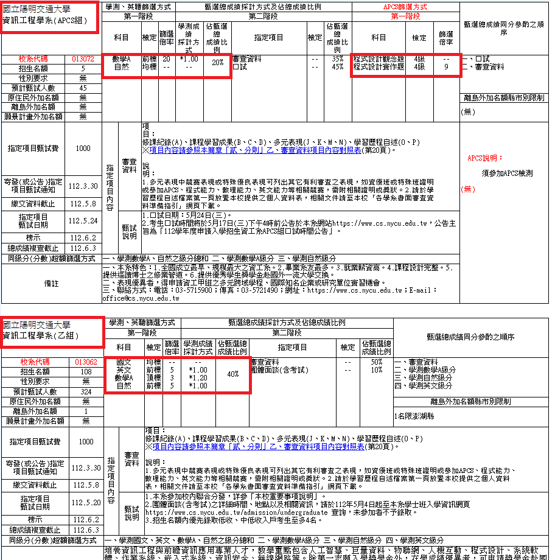

作者介紹
- 110學年度以特殊選才管道錄取陽明交通大學資訊工程學系，詳細經歷請查看連結(https://hakkaz.github.io/about)
- 目前於 AnnCode！安可程式 擔任 APCS 家教
- APCS 實作滿級分，參加程式競賽多年、教學經驗豐富，已帶領許多學生在 APCS 取得佳績
- AnnCode！安可程式 是專業 APCS 家教團隊，歡迎點擊連結了解更多！
什麼是「APCS大學程式先修檢測」？
「APCS 大學程式先修檢測」是一個目前最具公信力的高中生資訊能力檢定，分為程式觀念題以及程式實作題，各占五級分，滿分十級分。自 107 年起，學測個人申請開始採計 APCS 資訊能力檢測，直至今日 112 學年共有 59 個資訊相關校系共 162 個名額參與其中，包括台灣大學資工系、陽明交通大學資工系、清華大學資工系等頂大都已確定加入。
學測 APCS 組是什麼？
就如同上一段所述，現在有許多資訊相關科系加開名額給予有參加 APCS 檢定的同學作為額外的入學管道，APCS 組藉由「降低學測五標門檻，增加 APCS 門檻」的方法適性楊才，挖掘對程式設計有熱忱的同學進入資工系就讀，也讓部分偏科生能以優異的資訊能力錄取理想校系。
以 112 學年度學測個人申請為例：
陽明交通大學資訊工程學系乙組學測的各科門檻為：國文均標、英文前標、數Ａ頂標、自然前標。
陽明交通大學資訊工程學系 APCS 組學測的各科門檻為：數Ａ前標、自然均標、APCS 觀念題4級分、APCS 實作題4級分。

頂大 APCS 組跟你想的不一樣！
補習班噱頭
許多補習班都會利用 APCS 申請頂大資工系做為噱頭，如「APCS 檢定考得好，搶下清華大學、交通大學資工科系 APCS 組專屬入學門票！」等等的標語讓家長及學生暈頭轉向，但頂大 APCS 組真的只要考好APCS 就能錄取嗎？
頂大APCS組的真相
因為 APCS 的門檻限制，幾乎所有學校的 APCS 組學測門檻及錄取分數相較同科系都會略有下降，但頂大資工系的 APCS 組雖然學測門檻略有放寬，錄取分數卻不見得有所下降，甚至在面試這關難度，堪比第二次特殊選才，許多資訊高手都會參與其中。
依照筆者的經驗，錄取清大、交大資工系 APCS 組的同學，除了 APCS 實作幾乎都是滿級分以外，多數同學都有競賽成績或是科展成績，如：資訊學科能力競賽、資訊安全競賽、科展或是旺宏科學獎等等。
另外，筆者想分享 110 學年度台大資工 APCS 組的神奇現象，當年申請台大資工 APCS 組的學測門檻居然比一般組還要高分，而且錄取的同學幾乎都有進入資訊奧林匹亞第一階段。雖然 111 學年度並沒有再次出現如此競爭的局面，不過目前台大資工 APCS 組僅有開設 3 個名額，所以同學還是要知道其困難程度並不一般。
因此，想要利用 APCS 組錄取頂大資工的同學，除了 APCS 實作題以外，還要多多充實其他資訊相關的備審資料，才能讓自己立於不敗之地唷！
如何挑選 APCS 補習班
現在市面上這麼多 APCS 補習班，要不是老師根本沒考過 APCS，就是連 APCS的考試方向都不清楚，因此 AnnCode！之後會再寫一篇文章與大家分享，究竟如何挑選 APCS 補習班，才可以找到足夠專業的師資，避免自己花了大把鈔票又沒有讓孩子得到應有的學習成效！
如果對 APCS、資工系特殊選才相關議題有興趣記得追蹤、按讚 AnnCode！安可程式教育 的臉書粉絲團！
結語
文章的最後，希望讀者都能在這篇文章了解到更多關於 APCS 的相關訊息，若想要持續關注APCS以及程式解題的相關議題，歡迎追蹤 AnnCode！安可程式 的 FB 粉絲團。
文章作者
全文由 AnnCode！安可程式教育 撰寫，轉載文章請註明出處並附上本文連結。
AnnCode！安可程式教育是專業 APCS 家教團隊，超強師資陣容，團隊中每位老師皆為 APCS 實作滿級分高手，並且曾經參與 「TOI 高中資訊奧林匹亞競賽」、「ICPC 國際大學生程式設計競賽」等程式競賽，絕對是不可多得的一流師資。